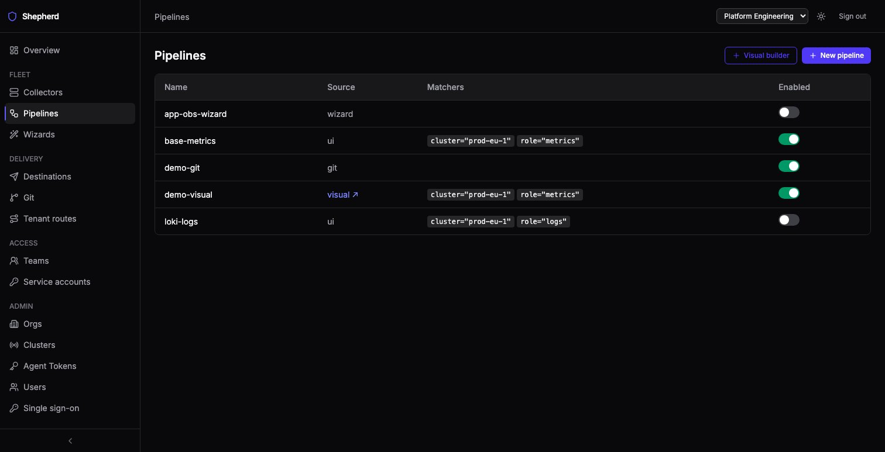

A pipeline is a fragment of Alloy config plus the matchers that decide which collectors receive it. Those two questions — who gets this and is it safe to serve — are answered here, and they apply identically to every pipeline no matter which editor produced it.
Matchers use Alertmanager syntax against a collector's keys —
cluster="prod-eu-1", role="metrics", role=~"metrics|logs".
Every collector has cluster and role; an organisation can opt in to
more (below). A pipeline with no matchers reaches nothing. The matcher input suggests the
key="value" pairs your collectors actually carry — only keys that
matching will evaluate — and a wizard shows how many collectors its matchers select
before you commit.

The Source column is worth reading: ui, wizard,
visual and git pipelines all merge identically, but a
git one is owned by its repository and will be overwritten on the next sync.
A git pipeline also ignores matchers: it goes to the collector its repository
link targets (see GitOps).
A match is not the last word. Each role accepts only the signals it is for: a
metrics collector takes metrics pipelines, a logs collector takes
logs pipelines, a receiver takes metrics, logs and traces, and a
singleton takes anything. A pipeline that matches a collector but carries a
signal its role does not accept is left out of that collector’s config — not
an error, so enabling it still works everywhere else. The served config’s header
names every pipeline left out and why.
Two per-organisation settings, both off by default, let matchers use more than
cluster and role. An app admin turns them on under
Admin → Orgs → Edit:
team="payments").Zone matches zone="eu-1".
They are separate because they are trusted differently: anyone holding a collector's token
can change what it reports, while only an org admin can set a label. So when the same key
comes from both, the admin label wins — and cluster and role
always win over either. Some keys can never be set by a label or an attribute:
cluster, role, id, os,
alloy_version, and anything starting collector. or
shepherd.. A key must also be a valid matcher name (letters, digits and
underscores, not starting with a digit), so an attribute such as k8s.namespace
cannot be matched on.
Turning label matching on can change which collectors your existing pipelines reach. Preview that before you flip it:
shepherd admin audit-matcher-impact --org <org-id>
After that, any label or attribute change that alters which pipelines a collector matches is
written to the audit log as pipeline.match.changed and counted in the
shepherd_pipeline_match_changes_total metric.
Nothing reaches a collector without passing three stages:
alloy validate binary, against the
pinned Alloy version, plus a check of how components are wired to each other against
the component schema. alloy validate does not evaluate references between
components, so it accepts two mistakes that Alloy then refuses at load. One is a list
of targets wrapped in another list (targets = [discovery.kubernetes.pods.targets];
drop the brackets). The other is a single receiver where a list is required
(forward_to = prometheus.remote_write.main.receiver; add the brackets). Shepherd
refuses both, with the line and column.
The gate proves a config is well formed and fits with the rest; it cannot run it. Alloy can
still reject a config at load time for reasons only the running agent knows — a
local.file whose path does not exist on that host, or a Kubernetes discovery
component on a collector that is not in Kubernetes. The collector then shows
FAILED with Alloy’s own error and keeps running its previous config
(see Collector status).
A collector’s own page shows the exact merged config it is being served right now, which is the fastest way to confirm a matcher selected what you meant it to.